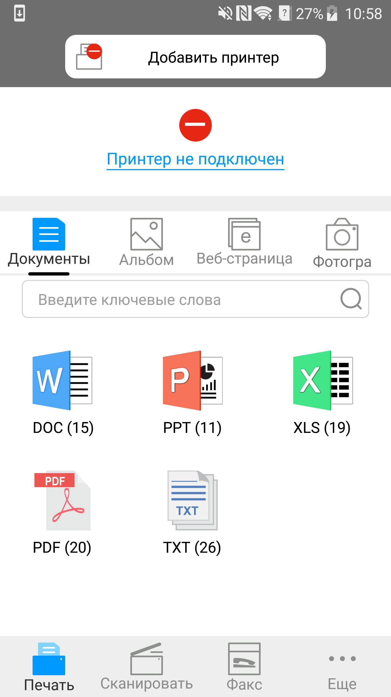

6. Приложение Pantum Mobile Print
6.1. Сведения о приложении Pantum Mobile Print
Pantum Mobile Print — это бесплатное приложение, которое позволяет пользователям печатать фотографии, документы и веб-страницы непосредственно с мобильного устройства. Мобильная печать компании Pantum применима к ОС Android 4.0-8.0 с разрешением экрана 480*800 и выше и размером экрана 3.5 дюйма. Оно позволяет подключить мобильное устройство с помощью принтера через точки доступа Wi-Fi. Необходимо только установить приложение Pantum Mobile Print для настройки параметров сети, и оно автоматически обнаружит совместимые принтеры для печати. Это очень удобно и эффективно.
6.2. Загрузка приложения Pantum Mobile Print
Чтобы загрузить приложение Pantum Mobile Print, перейдите на официальный веб-сайт Pantum по адресу: www.pantum.com.
6.3. Поддерживаемые мобильные операционные системы
Используется Android OS 4.4-8.0.
6.4. Использование мобильные устройства для выполнения мобильной печати
6.4.1. Для устройств Android
6.4.1.1. Предварительная подготовка
1. принтер с функцией беспроводной сетью.
2.Мобильное устройство Android.
6.4.1.2. Порядок действий
1. Включите источник питания принтера.
2. Кликните на надпись иконки PANTUM в главным экране мобильном оборудования Android, будет щёлкать нижеследующие поверхности.

3. Нажмите на кнопку “Добавить принтер” в верхней части интерфейса, после выберите способ добавления принтера в соответствии с предпочтениями.
4. Выберите необходимые функции и сделать соответствующие настройки для удовлетворения ваших функциональных потребностей.
 |
Примечание: |
• Если операция не удается, проверьте подключать ли ваш Android мобильного устройства к принтеру беспроводной сети. • Eсли мобильное оборудование Android не может найти любой принтер, то просмотри соединяется ли принтер с источником питания и включается ли принтер. • Для получения дополнительной информации см. Прилагаемое руководство пользователя мобильного принтера. |